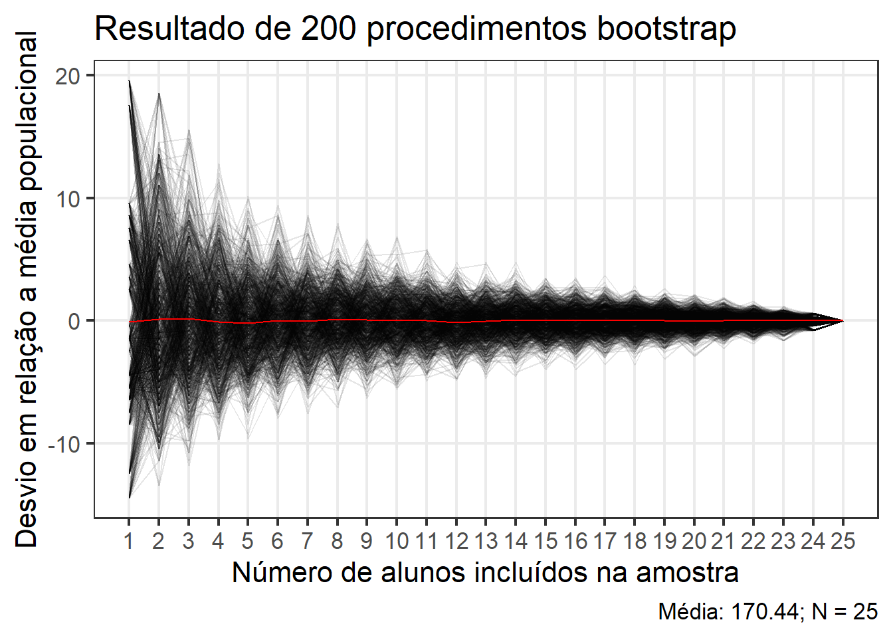

id aluno crm altura
1 1 Aline Kliauga Ferrante xx NA
2 2 André Cuneo Sagaz xy NA
3 3 Beatriz Haensel Teixeira xx NA
4 4 Bruna Waltrich xx 156
5 5 Carlos Eduardo Forcelini Assoni xy NA
6 7 Danielli Zangalli Kern xx 169
7 11 Gabriela Araujo Catto xx 162
8 8 Felipe Ricci Westphal xy NA
9 13 Helena dos Santos Vanderlinde xx 180
10 10 Gabriel Sbardelotto xy NA
11 14 Isabela Martins Ghizoni xx 166
12 20 Juliana Eduarda Oliveira Gomes xx 165
13 21 Kamilly Vitoria Siqueira Tonet xx 164
14 29 Maria Eduarda Wendt Coutinho xx 170
15 15 João Pedro dos Santos Angulski xy NA
16 30 Maria Laura Faustino Monteiro xx 164
17 35 Rafaela Rodrigues dos Santos xx 158
18 37 Tassie Turcato xx 165
19 38 Thalita Maria Gomes Rodrigues xx 163
20 39 Wanessa Pedrinha do Nascimento xx 177
21 6 Daniel Schmechel Affeldt xy 169
22 22 Leticia Herbert Post xx NA
23 9 Gabriel Loche Lopasso xy 188
24 12 Guilherme Antonio Ferreira xy 173
25 16 Joao Pedro Lantyer Marcelino xy 190
26 26 Luis Bortoluzzi Sobral xy NA
27 27 Luiz Paulo da Silva xy NA
28 28 Magalhães Antonio Saxico xy NA
29 17 João Vitor Germano xy 166
30 18 João Vitor Zeferino Madeira xy 168
31 31 Mateus Zunino Espindola xy NA
32 32 Matheus de Oliveira Mussi xy NA
33 33 Natacha Micheline de Oliveira da Rosa xx NA
34 34 Pierre Marcel Bruno Boisson xy NA
35 19 José Eduardo Pimentel e Silva xy 169
36 23 Lucas Lopes Ribeiro xy 175
37 24 Lucas Paz Claudino xy 178
38 25 Lucas Sodre de Oliveira xy 174
39 36 Renan Guilherme da Silva xy 179
40 40 Wesley Castilhos Drun xy NA
41 41 Wilson Rosa Neto xy 173
A função sample_random() retirada do pacote metan pode ser utilizada para amostrar n linhas aleatoriamente do conjunto de dados data. Utilizando prop, uma proporção dos dados é amostrada. Este último é útil ao realizar amostragens estratificadas informando o argumento by, onde cada estrato possui diferentes tamanhos de amostra.
# Função auxiliarsample_random <-function(data, n, prop,by =NULL,weight =NULL){if(!missing(by)){ data <- data |>group_by({{by}}) } dplyr::slice_sample(data, n = n, prop = prop, weight_by = weight) |>ungroup()}
Amostragem aleatória simples
A amostragem aleatória simples é o método mais básico de amostragem que tanto pode ser utilizado diretamente na seleção de uma amostra, quando se conhece os indivíduos da população, como ser parte de outros planos amostrais como, por exemplo, da Amostragem Estratificada.
O número possíveis de amostras com n indivíduos de uma população com N elementos, é dado por:
A seguinte função, computa a média das 120 amostras. Assim, obtém-se a distribuição das médias amostrais.
medias <-NULL# abordagem com for-loopfor (i in1:nrow(amostras)) { individ <- amostras[i,] valores <- df2$x[individ] medias <-append(medias, mean(valores))}# criar um data frame com as médiasdf_medias <-data.frame(amostras) |>mutate(media = medias)head(df_medias)
ggplot(df_medias, aes(x = media)) +geom_histogram(bins =8, color ="black", fill ="gray") +geom_vline(xintercept = med_pop, color ="red", size =1)
Warning: Using `size` aesthetic for lines was deprecated in ggplot2 3.4.0.
ℹ Please use `linewidth` instead.
Tamanho da amostra vs acurácia
No seguinte exemplo, vamos investigar o impacto do tamanho da amostra na acurácia da média. Para isso, serão amostradas aleatoriamente 1:120 médias amostrais do conjunto df_medias e calculado o desvio em relação a média populacional. O processo é repetido nboot vezes utilizando a técnica bootstrap.
nboot <-200samples <-list()for(j in1:nboot){ tmp <-map_dbl(1:nrow(df_medias), function(x){ rows <-sample(1:nrow(df_medias), x)mean(df_medias[rows,]$media) }) samples[[j]] <- tmp}# cada coluna contém as médias amostrais de um procedimento bootstrapsamples <-do.call(cbind, lapply(samples, data.frame))colnames(samples) <-paste0("v", 1:ncol(samples))# criar dados longosamples_long <- samples |>pivot_longer(everything()) |>mutate(desvio = value -mean(df2$x),x =rep(1:nrow(df_medias), each = nboot))# média dos procedimentos bootstrapsamples_mean <- samples_long |>group_by(x) |>summarise(mu =mean(desvio))# criar o gráficoggplot(samples_long, aes(x = x,y = desvio,group = name)) +geom_line(alpha =0.1) +geom_line(aes(x = x, y = mu, group =1),data = samples_mean,color ="red") +scale_x_continuous(breaks =seq(0, 120, by =10)) +theme_bw(base_size =16) +theme(panel.grid.minor =element_blank()) +labs(x ="Número de médias amostrais incluídas",y ="Desvio em relação a média populacional",title ="Resultado de 200 procedimentos bootstrap",caption = glue::glue("Média: {round(mean(df2$x), 3)}"))
id aluno crm altura
39 36 Renan Guilherme da Silva xy 179
24 12 Guilherme Antonio Ferreira xy 173
19 38 Thalita Maria Gomes Rodrigues xx 163
9 13 Helena dos Santos Vanderlinde xx 180
set.seed(4)nboot <-1000samples <-list()for(j in1:nboot){ tmp <-map_dbl(1:nrow(df_turma), function(x){ rows <-sample(1:nrow(df_turma), x)mean(df_turma[rows,]$altura) }) samples[[j]] <- tmp}# cada coluna contém as médias amostrais de um procedimento bootstrapsamples <-do.call(cbind, lapply(samples, data.frame))colnames(samples) <-paste0("v", 1:ncol(samples))# criar dados longosamples_long <- samples |>pivot_longer(everything()) |>mutate(desvio = value -mean(df_turma$altura),x =rep(1:nrow(df_turma), each = nboot))# média dos procedimentos bootstrapsamples_mean <- samples_long |>group_by(x) |>summarise(mu =mean(desvio))# criar o gráficoggplot(samples_long, aes(x = x,y = desvio,group = name)) +geom_line(alpha =0.1) +geom_line(aes(x = x, y = mu, group =1),data = samples_mean,color ="red") +scale_x_continuous(breaks =seq(1, nrow(df_turma), by =1)) +theme_bw(base_size =16) +theme(panel.grid.minor =element_blank()) +labs(x ="Número de alunos incluídos na amostra",y ="Desvio em relação a média populacional",title ="Resultado de 200 procedimentos bootstrap",caption = glue::glue("Média: {round(mean(df_turma$altura), 3)}; N = {nrow(df_turma)}"))

Abordagem paralela
Quando o número de amostras cresce bastante, a abordagem for-loop não é computacionalmente eficiente. Assim, uma abordagem utilizando sapply() é mais eficiente. Quando paraleliza-se a função, a eficiência aumenta mais ainda.
# criando uma função para obter a média de um idget_mean <-function(df, var, amostras, id){ individ <- amostras[id,]mean(df[[var]][individ])}N <-30n <-5df2 <-data.frame(id =1:N,x =rnorm(n = N, mean =10, sd =2))amostras2 <-combn(N, n) |>t()system.time( medias2 <-map_dbl(1:nrow(amostras2), function(i){get_mean(df2, "x", amostras2, id = i) }))library(parallel)clust <-makeCluster(5)clusterExport(clust,varlist =c("df2", "amostras2", "get_mean"))system.time( medias3 <-parLapply(clust, 1:nrow(amostras2), function(i){get_mean(df2, "x", amostras2, id = i) }))stopCluster(clust)
Amostragem Aleatória Estratificada
Número igual dentro de cada estrato
sample_random(df, n =3, by = crm)
# A tibble: 6 × 4
id aluno crm altura
<int> <chr> <chr> <int>
1 39 Wanessa Pedrinha do Nascimento xx 177
2 35 Rafaela Rodrigues dos Santos xx 158
3 29 Maria Eduarda Wendt Coutinho xx 170
4 34 Pierre Marcel Bruno Boisson xy NA
5 40 Wesley Castilhos Drun xy NA
6 12 Guilherme Antonio Ferreira xy 173
Proporção da população em cada estrato
sample_random(df,prop =0.3,by = crm)
# A tibble: 12 × 4
id aluno crm altura
<int> <chr> <chr> <int>
1 3 Beatriz Haensel Teixeira xx NA
2 39 Wanessa Pedrinha do Nascimento xx 177
3 1 Aline Kliauga Ferrante xx NA
4 22 Leticia Herbert Post xx NA
5 4 Bruna Waltrich xx 156
6 5 Carlos Eduardo Forcelini Assoni xy NA
7 31 Mateus Zunino Espindola xy NA
8 18 João Vitor Zeferino Madeira xy 168
9 17 João Vitor Germano xy 166
10 24 Lucas Paz Claudino xy 178
11 26 Luis Bortoluzzi Sobral xy NA
12 40 Wesley Castilhos Drun xy NA
Amostragem aleatória sistemática
sample_systematic <-function(data, n,r =NULL,by =NULL){ aux <-function(data, n, r =NULL){ k <-floor(nrow(data) / n)message("k = ", k)if(is.null(r)){ r <-sample(1:k, 1) }if(r ==1){ rows <-sample(1:nrow(data), n) } else{ rows <-seq(r, r + k*(n-1), k) }slice(data, rows) |>mutate(.id = rows, .before =1) }if(!missing(by)){ data <- data |>group_by({{by}}) }if(is.grouped_df(data)){ groups <-group_vars(data) data |>ungroup() |>nest(data =-c(!!!syms(groups))) |>mutate(sample =map(data, ~.x |>aux(n = n, r = r))) |>select(-data) |>unnest(sample) } else{aux(data, n = n, r = r) }}set.seed(1)sample_systematic(df, n =4)
k = 10
.id id aluno crm altura
1 9 13 Helena dos Santos Vanderlinde xx 180
2 19 38 Thalita Maria Gomes Rodrigues xx 163
3 29 17 João Vitor Germano xy 166
4 39 36 Renan Guilherme da Silva xy 179
---title: "6. Amostragem"---```{r}library(tidyverse)library(rio)df <-import("https://docs.google.com/spreadsheets/d/18aXD_2ISvzB8h8_kgOfSBbr9a9d9pT0QVazt-KjVLRw/edit#gid=1590128876")df```A função `sample_random()` retirada do pacote [metan](https://github.com/TiagoOlivoto/metan/blob/master/R/utils_sample.R) pode ser utilizada para amostrar `n` linhas aleatoriamente do conjunto de dados `data`. Utilizando `prop`, uma proporção dos dados é amostrada. Este último é útil ao realizar amostragens estratificadas informando o argumento `by`, onde cada estrato possui diferentes tamanhos de amostra.```{r}# Função auxiliarsample_random <-function(data, n, prop,by =NULL,weight =NULL){if(!missing(by)){ data <- data |>group_by({{by}}) } dplyr::slice_sample(data, n = n, prop = prop, weight_by = weight) |>ungroup()}```# Amostragem aleatória simplesA amostragem aleatória simples é o método mais básico de amostragem que tanto pode ser utilizado diretamente na seleção de uma amostra, quando se conhece os indivíduos da população, como ser parte de outros planos amostrais como, por exemplo, da Amostragem Estratificada.O número possíveis de amostras com `n` indivíduos de uma população com `N` elementos, é dado por:$$\mathop C\nolimits_N^n = \frac{N!}{n!(N-n)!}$$No próximo exemplo, veremos as possíveis amostras (120) com 3 indivíduos, tomadas de uma população com 10 indivíduos.```{r}N <-10n <-3d <-combn(N, n)t(d)```## AplicaçãoVamos considerar uma variável `x`, distribuida normalmente com média $\bar X = 10$ e desvio padrão $S = 2$, avaliada em população com N = 10.```{r}set.seed(1)N <-10df2 <-data.frame(id =1:N,x =rnorm(n = N, mean =10, sd =2))df2```Considerando uma amostragem com `n = 3`, as 120 amostras possíveis são```{r}n <-3amostras <-combn(N, n) |>t()amostras |>head()amostras |>tail()```## Médias amostraisA seguinte função, computa a média das 120 amostras. Assim, obtém-se a distribuição das médias amostrais.```{r}medias <-NULL# abordagem com for-loopfor (i in1:nrow(amostras)) { individ <- amostras[i,] valores <- df2$x[individ] medias <-append(medias, mean(valores))}# criar um data frame com as médiasdf_medias <-data.frame(amostras) |>mutate(media = medias)head(df_medias)tail(df_medias)```Ao computar a média das medias amostrais, obtém-se a média populacional```{r}med_amostral <-mean(df_medias$media)med_pop <-mean(df2$x)identical(med_amostral, med_pop)ggplot(df_medias, aes(x = media)) +geom_histogram(bins =8, color ="black", fill ="gray") +geom_vline(xintercept = med_pop, color ="red", size =1)```## Tamanho da amostra vs acuráciaNo seguinte exemplo, vamos investigar o impacto do tamanho da amostra na acurácia da média. Para isso, serão amostradas aleatoriamente 1:120 médias amostrais do conjunto `df_medias` e calculado o desvio em relação a média populacional. O processo é repetido `nboot` vezes utilizando a técnica bootstrap.```{r}#| out-width: "100%"nboot <-200samples <-list()for(j in1:nboot){ tmp <-map_dbl(1:nrow(df_medias), function(x){ rows <-sample(1:nrow(df_medias), x)mean(df_medias[rows,]$media) }) samples[[j]] <- tmp}# cada coluna contém as médias amostrais de um procedimento bootstrapsamples <-do.call(cbind, lapply(samples, data.frame))colnames(samples) <-paste0("v", 1:ncol(samples))# criar dados longosamples_long <- samples |>pivot_longer(everything()) |>mutate(desvio = value -mean(df2$x),x =rep(1:nrow(df_medias), each = nboot))# média dos procedimentos bootstrapsamples_mean <- samples_long |>group_by(x) |>summarise(mu =mean(desvio))# criar o gráficoggplot(samples_long, aes(x = x,y = desvio,group = name)) +geom_line(alpha =0.1) +geom_line(aes(x = x, y = mu, group =1),data = samples_mean,color ="red") +scale_x_continuous(breaks =seq(0, 120, by =10)) +theme_bw(base_size =16) +theme(panel.grid.minor =element_blank()) +labs(x ="Número de médias amostrais incluídas",y ="Desvio em relação a média populacional",title ="Resultado de 200 procedimentos bootstrap",caption = glue::glue("Média: {round(mean(df2$x), 3)}"))```## Exemplo da altura da turma```{r}#| out-width: "100%"df_turma <-import("https://docs.google.com/spreadsheets/d/18aXD_2ISvzB8h8_kgOfSBbr9a9d9pT0QVazt-KjVLRw/edit#gid=1590128876") |> metan::remove_rows_na()linhas <-sample(1:25, 4)df_turma[linhas,]set.seed(4)nboot <-1000samples <-list()for(j in1:nboot){ tmp <-map_dbl(1:nrow(df_turma), function(x){ rows <-sample(1:nrow(df_turma), x)mean(df_turma[rows,]$altura) }) samples[[j]] <- tmp}# cada coluna contém as médias amostrais de um procedimento bootstrapsamples <-do.call(cbind, lapply(samples, data.frame))colnames(samples) <-paste0("v", 1:ncol(samples))# criar dados longosamples_long <- samples |>pivot_longer(everything()) |>mutate(desvio = value -mean(df_turma$altura),x =rep(1:nrow(df_turma), each = nboot))# média dos procedimentos bootstrapsamples_mean <- samples_long |>group_by(x) |>summarise(mu =mean(desvio))# criar o gráficoggplot(samples_long, aes(x = x,y = desvio,group = name)) +geom_line(alpha =0.1) +geom_line(aes(x = x, y = mu, group =1),data = samples_mean,color ="red") +scale_x_continuous(breaks =seq(1, nrow(df_turma), by =1)) +theme_bw(base_size =16) +theme(panel.grid.minor =element_blank()) +labs(x ="Número de alunos incluídos na amostra",y ="Desvio em relação a média populacional",title ="Resultado de 200 procedimentos bootstrap",caption = glue::glue("Média: {round(mean(df_turma$altura), 3)}; N = {nrow(df_turma)}"))```## Abordagem paralelaQuando o número de amostras cresce bastante, a abordagem for-loop não é computacionalmente eficiente. Assim, uma abordagem utilizando `sapply()` é mais eficiente. Quando paraleliza-se a função, a eficiência aumenta mais ainda.```{r eval = FALSE}# criando uma função para obter a média de um idget_mean <-function(df, var, amostras, id){ individ <- amostras[id,]mean(df[[var]][individ])}N <-30n <-5df2 <-data.frame(id =1:N,x =rnorm(n = N, mean =10, sd =2))amostras2 <-combn(N, n) |>t()system.time( medias2 <-map_dbl(1:nrow(amostras2), function(i){get_mean(df2, "x", amostras2, id = i) }))library(parallel)clust <-makeCluster(5)clusterExport(clust,varlist =c("df2", "amostras2", "get_mean"))system.time( medias3 <-parLapply(clust, 1:nrow(amostras2), function(i){get_mean(df2, "x", amostras2, id = i) }))stopCluster(clust)```# Amostragem Aleatória Estratificada## Número igual dentro de cada estrato```{r}sample_random(df, n =3, by = crm)```## Proporção da população em cada estrato```{r}sample_random(df,prop =0.3,by = crm)```# Amostragem aleatória sistemática```{r}sample_systematic <-function(data, n,r =NULL,by =NULL){ aux <-function(data, n, r =NULL){ k <-floor(nrow(data) / n)message("k = ", k)if(is.null(r)){ r <-sample(1:k, 1) }if(r ==1){ rows <-sample(1:nrow(data), n) } else{ rows <-seq(r, r + k*(n-1), k) }slice(data, rows) |>mutate(.id = rows, .before =1) }if(!missing(by)){ data <- data |>group_by({{by}}) }if(is.grouped_df(data)){ groups <-group_vars(data) data |>ungroup() |>nest(data =-c(!!!syms(groups))) |>mutate(sample =map(data, ~.x |>aux(n = n, r = r))) |>select(-data) |>unnest(sample) } else{aux(data, n = n, r = r) }}set.seed(1)sample_systematic(df, n =4)``````{=html}<div align='center'><a href='https://www.free-website-hit-counter.com'><img src='https://www.free-website-hit-counter.com/c.php?d=9&id=138596&s=2' border='0' alt='Free Website Hit Counter'></a><br / ><small><a href='https://www.free-website-hit-counter.com' title="Free Website Hit Counter">Free website hit counter</a></small></div>```